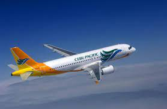
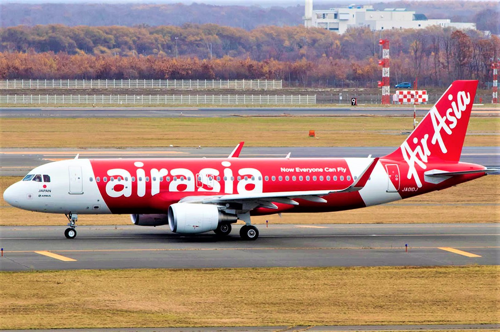
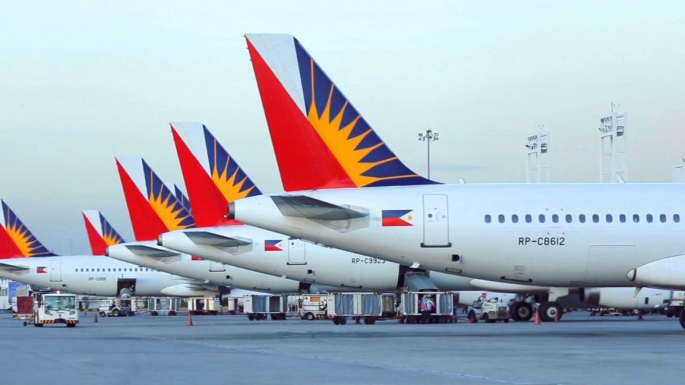

Cebu Pacific Air, Inc., operating as Cebu Pacific and stylized as cebu pacific, is a Philippine low-cost airline based on the grounds of Mactan–Cebu International Airport, Lapu-Lapu City, Metro Cebu, Philippines. Founded in 1988, it is Asia's oldest low-cost airline.
Air Asia Berhad is a Malaysian multinational low-cost airline headquartered near Kuala Lumpur, Malaysia. It is the largest airline in Malaysia by fleet size and destinations. AirAsia Group operates scheduled domestic and international flights to more than 165 destinations spanning 25 countries
Philippine Airlines, a trade name of PAL Holdings, Inc., also known historically as Philippine Air Lines, is the flag carrier of the Philippines. Headquartered at the PNB Financial Center in Pasay, the airline was founded in 1941 and is the first and oldest commercial airline in Asia operating under its original name.
